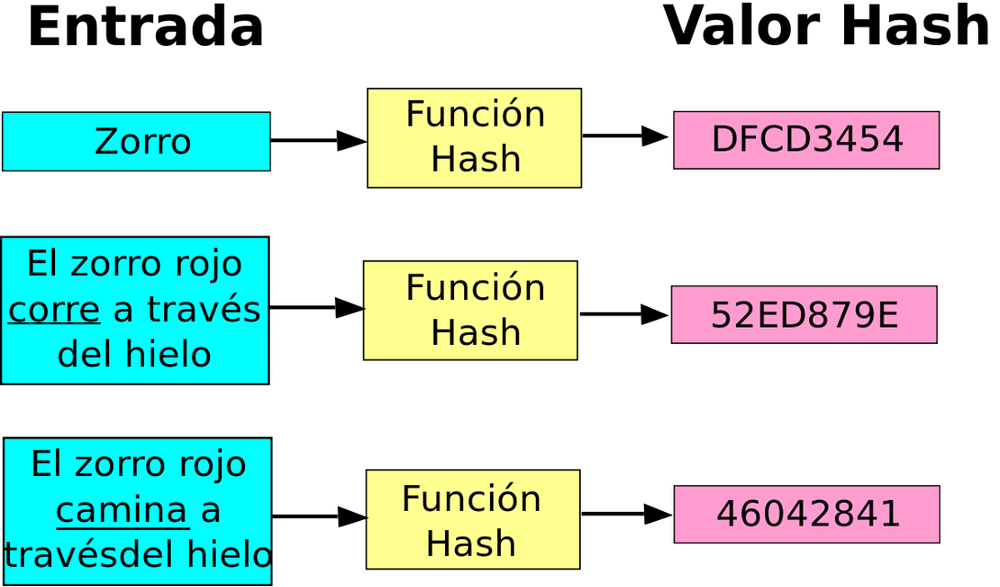
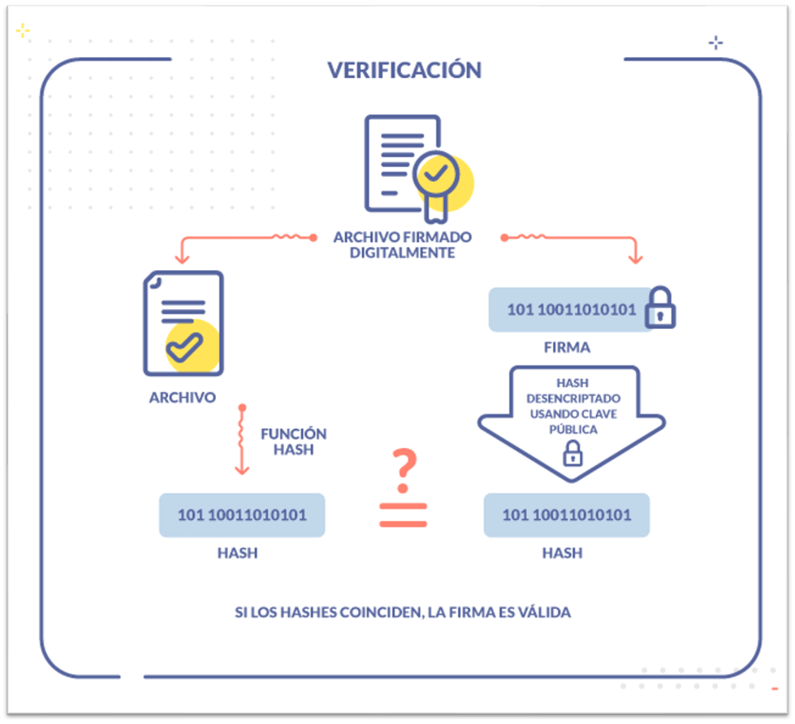

RSA: ciframos con clave pública, desciframos con clave privada. RSA resuelve confidencialidad.
Pero hay otro problema que RSA no resuelve directamente:
¿Cómo sé que el mensaje no fue modificado en el camino?
Descargar Office de 4 GB desde internet.
Cifrar 4 GB con RSA sería imprácticamente lento. ¿Como validar la integridad sin cifrar el archivo completo?
Una función hash toma cualquier cantidad de datos — un archivo de 1 byte o de 100 GB — y produce siempre una huella digital de tamaño fijo.
En RSA el cifrado es reversible con la clave correcta.
En una función hash la transformación es unidireccional por diseño — nunca se puede revertir.

import hashlib
# El mismo input SIEMPRE produce el mismo hash
print(hashlib.sha256(b"hola").hexdigest())
# a5cf06e0dd55e88f4f1b9b55ac5db8e28bf62a3e671048e92e1c9a24b0428027
# Un solo bit diferente => hash completamente distinto (efecto avalancha)
print(hashlib.sha256(b"Hola").hexdigest())
# 1e3f... completamente diferenteTrampa conceptual: si SHA-256 es seguro, ¿por qué no usarlo para contraseñas? El problema es que es demasiado rápido.
Una RTX 4090 calcula 22 mil millones de SHA-256/segundo. Una contraseña de 8 chars se crackea en segundos.
| Algoritmo | Año | Memoria adaptativa | Estado |
|---|---|---|---|
| bcrypt | 1999 | No | Aceptable |
| scrypt | 2009 | Sí | Bueno |
| Argon2id | 2015 | Sí | Recomendado (OWASP) |
| PBKDF2 | 2000 | No | Solo si no hay alternativa |
import hashlib, os
# Sin salt — vulnerable a rainbow tables
hash_sin_salt = hashlib.sha256(b"mi_password").hexdigest()
# 5e884898da280471... (en cualquier rainbow table)
# Con salt — invulnerable a tablas precalculadas
salt = os.urandom(32) # 32 bytes aleatorios únicos por usuario
hash_con_salt = hashlib.sha256(salt + b"mi_password").hexdigest()
# Almacenar: salt + hash_con_salt
# El salt no es secreto, se almacena junto al hash
# Su propósito es hacer cada hash único, no secretoUsar Argon2id en lugar de SHA+salt para contraseñas: maneja el salt automáticamente y añade resistencia a GPU/ASIC.
# VULNERABLE: MAC construido concatenando secreto
def mac_vulnerable(secreto, mensaje):
return hashlib.sha256(secreto + mensaje).hexdigest()
# Un atacante que conoce mac_vulnerable(secreto, "amount=100")
# puede calcular mac_vulnerable(secreto, "amount=100&admin=true")
# sin conocer el secreto — usando herramientas de length extension
# SEGURO: HMAC está diseñado para evitar este ataque
import hmac
def mac_seguro(secreto, mensaje):
return hmac.new(secreto, mensaje, hashlib.sha256).hexdigest()
# HMAC usa dos pasadas de hash que eliminan la vulnerabilidadRegla: Para MACs, siempre HMAC, nunca H(secreto || mensaje).
SHA-256 verifica integridad (¿fue modificado?), pero no autenticidad (¿quién lo generó?). Para esto existe HMAC.
HMAC(K, m) = H((K' ⊕ opad) || H((K' ⊕ ipad) || m))
import hmac
import hashlib
secreto = b"clave_secreta_compartida"
mensaje = b"amount=100&recipient=alice"
# Generar MAC
mac = hmac.new(secreto, mensaje, hashlib.sha256).hexdigest()
print("HMAC-SHA256:", mac)
# Verificar MAC (comparación de tiempo constante — evita timing attack)
mac_recibido = "..." # MAC del mensaje recibido
if hmac.compare_digest(mac, mac_recibido):
print("Mensaje auténtico e íntegro")
else:
print("Mensaje alterado o MAC inválido")
# IMPORTANTE: hmac.compare_digest previene timing attacks
# No usar mac == mac_recibido (revela info por tiempo de ejecución)Los hashes están en casi todo lo que usan a diario.
Verifican que el archivo recibido es completo, no fue alterado y no está corrompido.
# Verificar descarga de ISO de Ubuntu
sha256sum ubuntu-24.04.iso
# Comparar con el hash publicado en el sitio oficialUsado para: archivos .zip, .tar, ISOs, firmware, paquetes (npm, pip, apt)
No se firma el documento completo con RSA — eso sería lento para archivos grandes. Se firma el hash del documento.

TLS 1.3 solo acepta SHA-256 y SHA-384 — SHA-1 completamente eliminado.
Bitcoin usa SHA-256 para encadenar bloques y el mecanismo de Proof of Work. Cambiar una transacción cambia el hash del bloque, que cambia el del siguiente — invalidando toda la cadena.
Ethereum usa Keccak-256 (SHA-3 no estándar).
Cada commit, árbol y blob en Git tiene un identificador SHA-1 (en
proceso de migración a SHA-256). El git log que usan
a diario está basado en hashes.
import hashlib
mensaje = "Hola, mundo"
hash_sha256 = hashlib.sha256(mensaje.encode()).hexdigest()
print("SHA-256:", hash_sha256)
# Para archivos grandes: usar update() para no cargar todo en memoria
sha256 = hashlib.sha256()
with open("archivo_grande.bin", "rb") as f:
for chunk in iter(lambda: f.read(65536), b""):
sha256.update(chunk)
print("SHA-256 del archivo:", sha256.hexdigest())from argon2 import PasswordHasher, exceptions
ph = PasswordHasher()
# Configuración OWASP mínima por defecto: m=65536, t=3, p=4
# Registrar contraseña
hash_almacenado = ph.hash("mi_super_contraseña")
print("Hash Argon2id:", hash_almacenado)
# Verificar contraseña
try:
ph.verify(hash_almacenado, "mi_super_contraseña")
if ph.check_needs_rehash(hash_almacenado):
nuevo_hash = ph.hash("mi_super_contraseña")
# Almacenar nuevo_hash en la BD
print("Acceso concedido")
except exceptions.VerifyMismatchError:
print("Contraseña incorrecta")
except exceptions.VerificationError:
print("Error en verificación")import hmac
import hashlib
import secrets
api_secret = secrets.token_bytes(32)
def firmar_request(secreto, payload: bytes) -> str:
return hmac.new(secreto, payload, hashlib.sha256).hexdigest()
def verificar_request(secreto, payload: bytes, firma_recibida: str) -> bool:
firma_esperada = firmar_request(secreto, payload)
# compare_digest: tiempo constante — previene timing attack
return hmac.compare_digest(firma_esperada, firma_recibida)
payload = b"POST /transfer amount=100 to=bob"
firma = firmar_request(api_secret, payload)
assert verificar_request(api_secret, payload, firma)Los hashes ayudan a unir los algoritmos criptográficos.
| Caso de uso | Algoritmo |
|---|---|
| Integridad de datos / firmas | SHA-256 o SHA-3 |
| Contraseñas | Argon2id |
| Autenticar mensajes / APIs | HMAC-SHA256 |
| MD5 / SHA-1 | Solo legacy o checksum no-crítico |